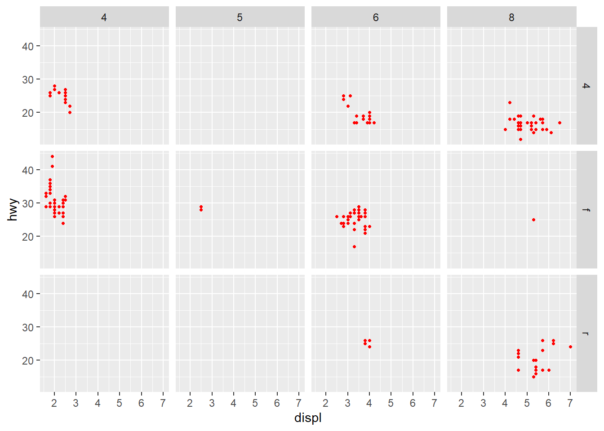

r for data science 1 ggplot2
2022-11-02
Last updated: 2023-10-16
Checks: 7 0
Knit directory: R4DS/
This reproducible R Markdown analysis was created with workflowr (version 1.7.1). The Checks tab describes the reproducibility checks that were applied when the results were created. The Past versions tab lists the development history.
Great! Since the R Markdown file has been committed to the Git repository, you know the exact version of the code that produced these results.
Great job! The global environment was empty. Objects defined in the global environment can affect the analysis in your R Markdown file in unknown ways. For reproduciblity it’s best to always run the code in an empty environment.
The command set.seed(20231016) was run prior to running
the code in the R Markdown file. Setting a seed ensures that any results
that rely on randomness, e.g. subsampling or permutations, are
reproducible.
Great job! Recording the operating system, R version, and package versions is critical for reproducibility.
Nice! There were no cached chunks for this analysis, so you can be confident that you successfully produced the results during this run.
Great job! Using relative paths to the files within your workflowr project makes it easier to run your code on other machines.
Great! You are using Git for version control. Tracking code development and connecting the code version to the results is critical for reproducibility.
The results in this page were generated with repository version faa4f4a. See the Past versions tab to see a history of the changes made to the R Markdown and HTML files.
Note that you need to be careful to ensure that all relevant files for
the analysis have been committed to Git prior to generating the results
(you can use wflow_publish or
wflow_git_commit). workflowr only checks the R Markdown
file, but you know if there are other scripts or data files that it
depends on. Below is the status of the Git repository when the results
were generated:
Ignored files:
Ignored: .Rproj.user/
Ignored: r-for-data-science-1-ggplot2_files/
Ignored: r-for-data-science-5-explorative-data-analysis_files/
Untracked files:
Untracked: site_libs/
Note that any generated files, e.g. HTML, png, CSS, etc., are not included in this status report because it is ok for generated content to have uncommitted changes.
These are the previous versions of the repository in which changes were
made to the R Markdown (analysis/1_ggplot2.Rmd) and HTML
(docs/1_ggplot2.html) files. If you’ve configured a remote
Git repository (see ?wflow_git_remote), click on the
hyperlinks in the table below to view the files as they were in that
past version.
| File | Version | Author | Date | Message |
|---|---|---|---|---|
| Rmd | faa4f4a | Bridream | 2023-10-16 | Adding analysis files |
Layer and Geometry
library("tidyverse")Warning: 程辑包'ggplot2'是用R版本4.3.1 来建造的Warning: 程辑包'purrr'是用R版本4.3.1 来建造的Warning: 程辑包'dplyr'是用R版本4.3.1 来建造的── Attaching core tidyverse packages ──────────────────────── tidyverse 2.0.0 ──
✔ dplyr 1.1.3 ✔ readr 2.1.4
✔ forcats 1.0.0 ✔ stringr 1.5.0
✔ ggplot2 3.4.3 ✔ tibble 3.2.1
✔ lubridate 1.9.2 ✔ tidyr 1.3.0
✔ purrr 1.0.2
── Conflicts ────────────────────────────────────────── tidyverse_conflicts() ──
✖ dplyr::filter() masks stats::filter()
✖ dplyr::lag() masks stats::lag()
ℹ Use the conflicted package (<http://conflicted.r-lib.org/>) to force all conflicts to become errorsggplot2::mpg# A tibble: 234 × 11
manufacturer model displ year cyl trans drv cty hwy fl class
<chr> <chr> <dbl> <int> <int> <chr> <chr> <int> <int> <chr> <chr>
1 audi a4 1.8 1999 4 auto… f 18 29 p comp…
2 audi a4 1.8 1999 4 manu… f 21 29 p comp…
3 audi a4 2 2008 4 manu… f 20 31 p comp…
4 audi a4 2 2008 4 auto… f 21 30 p comp…
5 audi a4 2.8 1999 6 auto… f 16 26 p comp…
6 audi a4 2.8 1999 6 manu… f 18 26 p comp…
7 audi a4 3.1 2008 6 auto… f 18 27 p comp…
8 audi a4 quattro 1.8 1999 4 manu… 4 18 26 p comp…
9 audi a4 quattro 1.8 1999 4 auto… 4 16 25 p comp…
10 audi a4 quattro 2 2008 4 manu… 4 20 28 p comp…
# ℹ 224 more rowsggplot(data=mpg)+
geom_point(mapping=aes(x=displ, y=hwy, colour=class, shape=displ<5), size=2)ggplot(data = mpg) +
geom_point(mapping = aes(x = displ, y = hwy), colour='red', size=1.5, shape=20) +
facet_grid(drv ~ cyl)
ggplot(data=mpg) +
geom_smooth(mapping=aes(x=displ, y=hwy, linetype=drv))`geom_smooth()` using method = 'loess' and formula = 'y ~ x'
ggplot(mpg, mapping=aes(x=displ, y=hwy)) +
geom_point(mapping=aes(color=class), show.legend = FALSE) +
geom_smooth(color='orange', se=FALSE, linetype="solid")`geom_smooth()` using method = 'loess' and formula = 'y ~ x'Theme
Using theme{ggplot2} to set the theme of the coordinate system, such as background, grid and etc.
Statistic Transformation
ggplot2::diamonds# A tibble: 53,940 × 10
carat cut color clarity depth table price x y z
<dbl> <ord> <ord> <ord> <dbl> <dbl> <int> <dbl> <dbl> <dbl>
1 0.23 Ideal E SI2 61.5 55 326 3.95 3.98 2.43
2 0.21 Premium E SI1 59.8 61 326 3.89 3.84 2.31
3 0.23 Good E VS1 56.9 65 327 4.05 4.07 2.31
4 0.29 Premium I VS2 62.4 58 334 4.2 4.23 2.63
5 0.31 Good J SI2 63.3 58 335 4.34 4.35 2.75
6 0.24 Very Good J VVS2 62.8 57 336 3.94 3.96 2.48
7 0.24 Very Good I VVS1 62.3 57 336 3.95 3.98 2.47
8 0.26 Very Good H SI1 61.9 55 337 4.07 4.11 2.53
9 0.22 Fair E VS2 65.1 61 337 3.87 3.78 2.49
10 0.23 Very Good H VS1 59.4 61 338 4 4.05 2.39
# ℹ 53,930 more rowsggplot(data=diamonds) +
geom_bar(mapping=aes(x=cut, fill=clarity))
#default: stat="count", y=..count...ggplot(data=diamonds) +
geom_bar(mapping=aes(x=cut, y=..prop.., group=1))Warning: The dot-dot notation (`..prop..`) was deprecated in ggplot2 3.4.0.
ℹ Please use `after_stat(prop)` instead.
This warning is displayed once every 8 hours.
Call `lifecycle::last_lifecycle_warnings()` to see where this warning was
generated.
#use y to map a particular computed statistic variables. arguments 'stat="prop"' doesn't work cause there is no stat_prop function.ggplot(data=diamonds) +
stat_summary(
mapping=aes(x=cut, y=depth),
fun.min=min,
fun.max=max,
fun=median
) +
stat_summary(
mapping=aes(x=cut, y=depth),
fun=mean,
color="red"
)Warning: Removed 5 rows containing missing values (`geom_segment()`).Position and Coordinate System
Look help for position_dodge, position_fill, position_identity,
position_jitter, position_stack.
Use either position=[“dodge”] or position=position_dodg() as argument
passed on to the geom layer function.
Look help for COORDINATE_FUNCTION with keyword “coord_” for details.
The Layered Grammar of Graphics
Any plot can be described as a combination of a dataset, a geom, a set of mappings, a stat, a position adjustment, a coordinate system, and a facet scheme.
sessionInfo()R version 4.3.0 (2023-04-21 ucrt)
Platform: x86_64-w64-mingw32/x64 (64-bit)
Running under: Windows 11 x64 (build 22621)
Matrix products: default
locale:
[1] LC_COLLATE=Chinese (Simplified)_China.utf8
[2] LC_CTYPE=Chinese (Simplified)_China.utf8
[3] LC_MONETARY=Chinese (Simplified)_China.utf8
[4] LC_NUMERIC=C
[5] LC_TIME=Chinese (Simplified)_China.utf8
time zone: Asia/Shanghai
tzcode source: internal
attached base packages:
[1] stats graphics grDevices utils datasets methods base
other attached packages:
[1] lubridate_1.9.2 forcats_1.0.0 stringr_1.5.0 dplyr_1.1.3
[5] purrr_1.0.2 readr_2.1.4 tidyr_1.3.0 tibble_3.2.1
[9] ggplot2_3.4.3 tidyverse_2.0.0 workflowr_1.7.1
loaded via a namespace (and not attached):
[1] sass_0.4.7 utf8_1.2.3 generics_0.1.3 lattice_0.21-8
[5] stringi_1.7.12 hms_1.1.3 digest_0.6.33 magrittr_2.0.3
[9] timechange_0.2.0 evaluate_0.21 grid_4.3.0 fastmap_1.1.1
[13] Matrix_1.6-1.1 rprojroot_2.0.3 jsonlite_1.8.7 processx_3.8.1
[17] whisker_0.4.1 ps_1.7.5 promises_1.2.1 mgcv_1.8-42
[21] httr_1.4.7 fansi_1.0.4 viridisLite_0.4.2 scales_1.2.1
[25] jquerylib_0.1.4 cli_3.6.1 crayon_1.5.2 rlang_1.1.1
[29] splines_4.3.0 munsell_0.5.0 withr_2.5.1 cachem_1.0.8
[33] yaml_2.3.7 tools_4.3.0 tzdb_0.4.0 colorspace_2.1-0
[37] httpuv_1.6.11 vctrs_0.6.3 R6_2.5.1 lifecycle_1.0.3
[41] git2r_0.32.0 fs_1.6.3 pkgconfig_2.0.3 callr_3.7.3
[45] pillar_1.9.0 bslib_0.5.1 later_1.3.1 gtable_0.3.4
[49] glue_1.6.2 Rcpp_1.0.11 xfun_0.40 tidyselect_1.2.0
[53] rstudioapi_0.14 knitr_1.44 farver_2.1.1 nlme_3.1-162
[57] htmltools_0.5.6 labeling_0.4.3 rmarkdown_2.25 compiler_4.3.0
[61] getPass_0.2-2